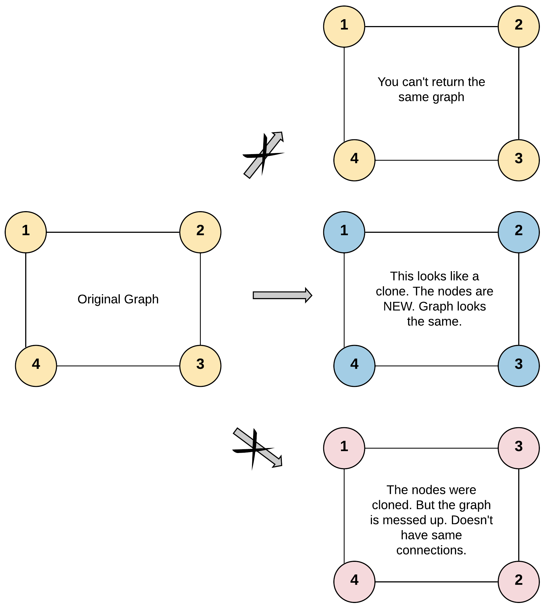
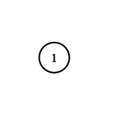

133. 克隆图
题目与约束
给你无向 连通 图中一个节点的引用，请你返回该图的 深拷贝（克隆）。
图中的每个节点都包含它的值 val（int） 和其邻居的列表（list[Node]）。
class Node {
public int val;
public List<Node> neighbors;
}
测试用例格式：
简单起见，每个节点的值都和它的索引相同。例如，第一个节点值为 1（val = 1），第二个节点值为 2（val = 2），以此类推。该图在测试用例中使用邻接列表表示。
邻接列表 是用于表示有限图的无序列表的集合。每个列表都描述了图中节点的邻居集。
给定节点将始终是图中的第一个节点（值为 1）。你必须将 给定节点的拷贝 作为对克隆图的引用返回。
示例 1：

输入：adjList = [[2,4],[1,3],[2,4],[1,3]]
输出：[[2,4],[1,3],[2,4],[1,3]]
解释：
图中有 4 个节点。
节点 1 的值是 1，它有两个邻居：节点 2 和 4 。
节点 2 的值是 2，它有两个邻居：节点 1 和 3 。
节点 3 的值是 3，它有两个邻居：节点 2 和 4 。
节点 4 的值是 4，它有两个邻居：节点 1 和 3 。
示例 2：

输入：adjList = [[]]
输出：[[]]
解释：输入包含一个空列表。该图仅仅只有一个值为 1 的节点，它没有任何邻居。
示例 3：
输入：adjList = []
输出：[]
解释：这个图是空的，它不含任何节点。
提示：
-
这张图中的节点数在
[0, 100]之间。 -
1 <= Node.val <= 100 -
每个节点值
Node.val都是唯一的， -
图中没有重复的边，也没有自环。
-
图是连通图，你可以从给定节点访问到所有节点。
核心不变量
哈希表
visited保证每个原节点只被克隆一次；只要先登记「原节点 → 新节点」再递归邻居，环也能被正确构造而不会无限递归。
完整推导
思路推导
- 为什么不能简单复制
图有环：节点 1 的邻居 2 又指回 1。如果只是 new Node(cur.val) 然后递归拷贝邻居，就会在环上无限递归、爆栈。必须记录「已经克隆过谁」。
- 哈希表去重
用 Map<原节点, 克隆节点>。克隆某个节点时，先生成新节点并立刻放进 map，再去处理它的邻居。这样当邻居又指回自己时，直接从 map 取到那个已经创建好的克隆节点，环被正确连接。
- DFS 三条分支
- 节点为空：返回空；
- 该节点已在 map 中：直接返回它的克隆；
- 否则：新建克隆、登记入 map、递归克隆每个邻居并挂到克隆节点的邻居列表上。
- 小例子（示例 1）
从 1 出发新建克隆 1' 并登记；遍历邻居 2、4，分别克隆出 2'、4'；2' 的邻居 1 已在 map 中直接取 1'，3 克隆出 3'；最终得到与原来结构一致、但节点全新的图。
Java 实现（cloneGraph）
/*
// Definition for a Node.
class Node {
public int val;
public List<Node> neighbors;
public Node() {
val = 0;
neighbors = new ArrayList<Node>();
}
public Node(int _val) {
val = _val;
neighbors = new ArrayList<Node>();
}
public Node(int _val, ArrayList<Node> _neighbors) {
val = _val;
neighbors = _neighbors;
}
}
*/
import java.util.ArrayList;
import java.util.HashMap;
import java.util.List;
import java.util.Map;
class Solution {
// 原节点 -> 克隆节点
private Map<Node, Node> visited = new HashMap<>();
public Node cloneGraph(Node node) {
if (node == null) {
return null;
}
// 已经克隆过，直接返回，避免环上重复递归
if (visited.containsKey(node)) {
return visited.get(node);
}
// 先创建克隆节点并登记，再处理邻居（顺序很关键）
Node clone = new Node(node.val);
visited.put(node, clone);
for (Node neighbor : node.neighbors) {
clone.neighbors.add(cloneGraph(neighbor));
}
return clone;
}
}
C++ 实现
/*
// Definition for a Node.
class Node {
public:
int val;
vector<Node*> neighbors;
Node() {
val = 0;
neighbors = vector<Node*>();
}
Node(int _val) {
val = _val;
neighbors = vector<Node*>();
}
Node(int _val, vector<Node*> _neighbors) {
val = _val;
neighbors = _neighbors;
}
};
*/
class Solution {
unordered_map<Node*, Node*> visited;
public:
Node* cloneGraph(Node* node) {
if (!node) return nullptr;
auto it = visited.find(node);
if (it != visited.end()) return it->second;
// 先创建克隆并登记，再递归邻居
Node* clone = new Node(node->val);
visited[node] = clone;
for (Node* neighbor : node->neighbors) {
clone->neighbors.push_back(cloneGraph(neighbor));
}
return clone;
}
};
Python 实现
"""
# Definition for a Node.
class Node:
def __init__(self, val = 0, neighbors = None):
self.val = val
self.neighbors = neighbors if neighbors is not None else []
"""
class Solution:
def cloneGraph(self, node: Optional['Node']) -> Optional['Node']:
visited = {}
def dfs(cur):
if cur is None:
return None
if cur in visited:
return visited[cur]
# 先创建克隆并登记，再递归邻居
clone = Node(cur.val)
visited[cur] = clone
for nei in cur.neighbors:
clone.neighbors.append(dfs(nei))
return clone
return dfs(node)
复杂度
- 时间：O(N+E)，N 为节点数、E 为边数；每个节点克隆一次，每条邻接边处理一次。
- 空间：O(N)，哈希表存 N 对映射，递归栈最坏 O(N)。
- 先登记再递归邻居：必须在递归邻居之前把
visited.put(node, clone)做好，否则遇到环会重复创建节点、甚至栈溢出。 - 必须使用「原节点」作 key：映射的键是原图节点引用，不是
val；虽然本题val唯一，但用对象引用才是通用正确做法。 - 空图处理：
node == null直接返回null（示例 3）。 - 自环/重边：题目保证无自环无重边，但算法本身能正确处理自环，因为克隆节点已先登记。
- BFS 替代：也可用队列做 BFS——出队时遍历邻居，未克隆的先克隆入队，已克隆的直接加入当前克隆节点的邻居列表；与 DFS 等价。